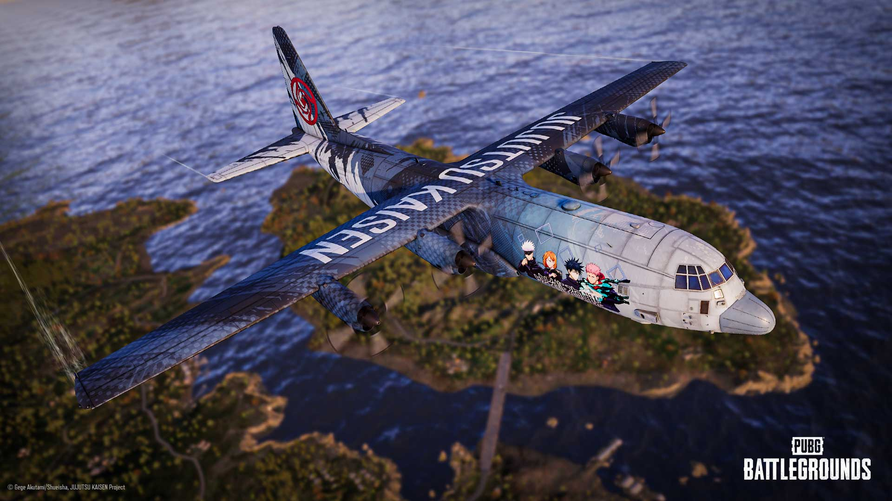
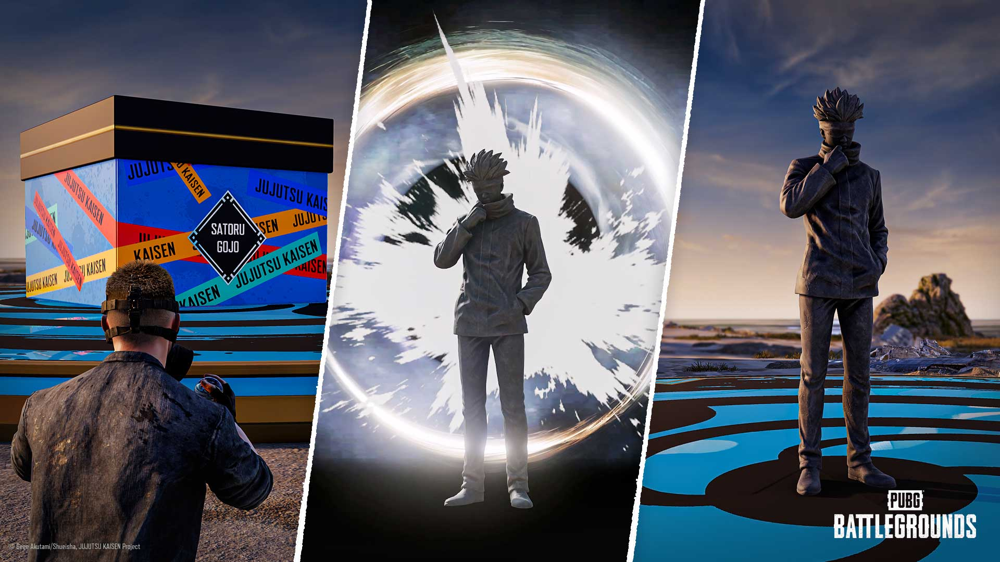
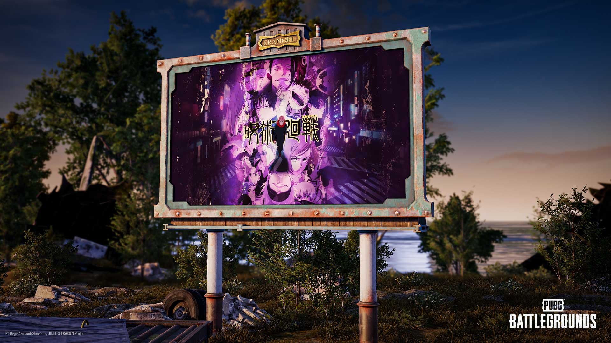
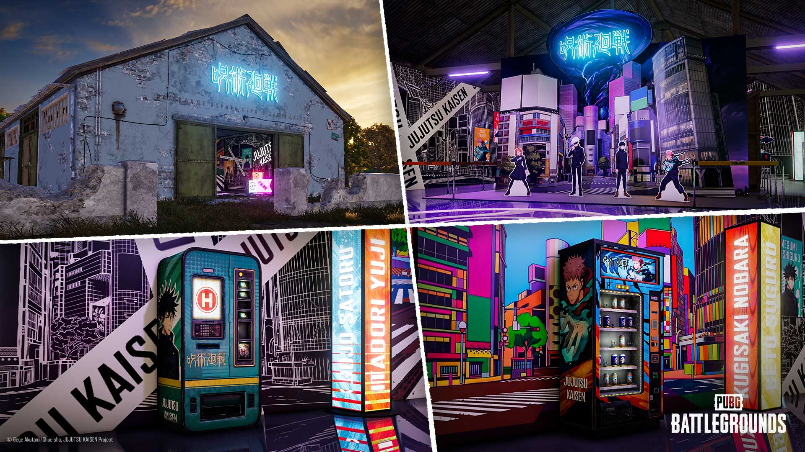
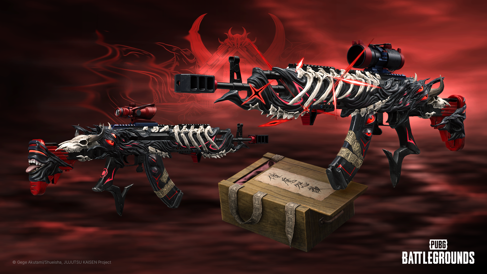

배틀그라운드 주술회전 콜라보 PC 시작 콘솔 9월 17일 고죠 사토루 석상
이틀 전, 그러니까 9월 10일 점검이 끝나자마자 배틀그라운드에 주술회전 콜라보가 열렸는데요, 저도 소식을 보자마자 클라이언트부터 켰습니다. 그런데 막상 살펴보니 PC랑 콘솔 일정이 완전히 따로 노는 데다, 시작섬이랑 에란겔 곳곳에 바뀐 것도 생각보다 많더라고요. 헷갈리기 딱 좋은 구성이라, 오늘은 PC·콘솔 시작일부터 시작섬 석상, 무기 스킨까지 한 번에 짚어드릴게요.

주술회전 테마로 꾸며진 수송기가 에란겔 상공을 날아가는 공식 키비주얼이에요
이미지 출처: PUBG 공식 뉴스
PC는 이미 시작, 콘솔은 9월 17일 — 헷갈리기 쉬운 시작일
PC 서버는 9월 10일(목) 점검이 끝나면서 곧바로 콜라보가 열렸고, 콘솔은 일주일 늦은 9월 17일(목) 점검 후에 시작돼요. 저는 PC라 이틀 전부터 바로 즐기고 있는데, 콘솔로 하시는 분들은 아직 일주일 정도 더 기다리셔야 하는 셈이죠. 시작만 다른 게 아니라 끝나는 날짜도 따로 잡혀 있어서, 표로 한 번 정리해봤습니다.
| 구분 | 시작 | 종료 |
|---|---|---|
| PC | 9월 10일(목) 점검 후 | 10월 14일(수) 오전 9시 |
| 콘솔 | 9월 17일(목) 점검 후 | 10월 22일(목) 오전 9시 |
종료 시각은 둘 다 오전 9시로 같은데 날짜가 다르니, 표만 보고 '어차피 비슷하겠지' 하고 넘기지 마시고 본인 플랫폼 기준으로 한 번 더 확인하시는 게 좋아요. 이용 기간 자체는 PC·콘솔 다 한 달 조금 넘는 정도로 비슷합니다.
시작섬에 들어가면 바로 생기는 '수수께끼 구체', 정체가 뭘까요
전체 맵 공통 시작섬에 진입하면 누구나 수수께끼 구체 20개를 받는데, 이걸 주술회전 상자에 던져서 적중을 20번 채우면 상자가 열리면서 고죠 사토루 석상이 등장해요. 혼자 다 맞히기 부담스러우면 같이 시작하는 팀원이랑 나눠 던져도 되니까 가볍게 도전해보시면 좋을 것 같아요.
석상이 등장하고 나면 그 주변 일정 범위에 '영역전개 무량공처' 연출이 15초 동안 펼쳐진다고 해요. 길게 이어지는 효과는 아니지만, 주술회전을 아는 분이라면 이 장면 하나만으로도 반가울 거예요.

주술회전 상자가 열리면 나타나는 고죠 사토루 석상이에요
이미지 출처: PUBG 공식 뉴스
에란겔이 통째로 주술회전 테마로 바뀌나요
전부 바뀌는 건 아니고, 에란겔 안 일부 창고 건물이 주술회전 테마 공간으로 꾸며지고 새로운 위치에도 창고가 추가되는 정도예요. 맵 곳곳 전광판 연출도 같이 테마가 입혀졌는데, 그냥 색만 바뀐 수준이 아니라 주술회전 로고나 캐릭터 실루엣이 큼직하게 박힌 전광판이 여기저기 세워져 있어서 멀리서도 한눈에 콜라보 분위기가 느껴져요. 낙하하면서부터 눈에 띄다 보니, 착지 지점 잡을 때 은근히 랜드마크 역할도 해주더라고요.

에란겔 곳곳에 세워진 주술회전 테마 전광판이에요
이미지 출처: PUBG 공식 뉴스
테마가 입혀진 창고 안에는 주술회전 캐릭터 등신대랑 포토존이 놓이고, 자판기에서 부스트·회복 아이템도 얻을 수 있다고 하더라고요. 사진 찍기 좋은 자리 하나 생긴 셈이라, 지나가는 길이면 한 번쯤 들러볼 만해요.

주술회전 테마로 꾸며진 창고 내부 모습이에요
이미지 출처: PUBG 공식 뉴스
'양면 스쿠나' 무기 스킨은 어떻게 얻나요
이번 콜라보의 대표 성장형 무기 스킨은 '양면 스쿠나 - 베릴 M762'인데, 최대 레벨 10까지 단계별로 외형이 바뀌는 스킨이에요. '양면 스쿠나 - 밀수품 상자'를 열어야 나오는데, 이 상자는 G-코인으로도 열리고 양면 스쿠나 획득권으로도 열려요. 이 획득권이 현금 전용은 아니고 8,000 BP씩 최대 50개까지 게임 재화로 직접 구매할 수 있게 돼 있더라고요. BP는 매치 뛰면서 그냥 쌓이는 무료 재화니까, 마음만 먹으면 결제 없이 BP만 차곡차곡 모아서 노려보는 것도 가능한 셈이에요. 다만 8,000 BP가 한 번에 만만한 양은 아니라서, 여러 판 꾸준히 돌려야 모을 수 있다는 점은 감안하셔야 해요.
제작소에서는 다른 캐릭터 테마 무기 스킨도 만들 수 있는데, 확인된 것만 정리하면 이렇습니다.
- 고죠 사토루 - M24
- 고죠 사토루 - M416
- 후시구로 메구미 - VSS
- 후시구로 메구미 - 벡터
- 게토 스구루 - 프라이팬
- 이타도리 유지 - SLR
캐릭터마다 배정된 무기 종류가 다 달라서, 좋아하는 캐릭터 기준으로 어떤 무기를 노릴지 미리 정해두면 제작소 돌 때 훨씬 수월할 것 같아요.

성장형 무기 스킨 '양면 스쿠나 - 베릴 M762'예요
이미지 출처: PUBG 공식 뉴스
콜라보 미션 3종, 뭘 하면 뭘 주나요
위에서 본 표는 콜라보 자체가 열려 있는 기간이었다면, 이번엔 좀 다른 얘기예요. 같은 콜라보 기간 안에서 따로 참여 기간이 잡힌 미션 이벤트 3종이 있는데, 미션별로 시작·끝나는 날짜가 또 제각각이라 헷갈리지 않게 따로 정리해볼게요.
① PUBG X 주술회전 이벤트 (PC 9월 10일~9월 24일, 콘솔 9월 17일~10월 1일)
로비에 접속하고, 시작섬에서 받은 수수께끼 구체로 주술회전 상자를 다섯 번 맞히고, 주술회전 창고에 한 번 들어가고, 창고 안 자판기를 각각 3번·10번 써주면 끝나는 미션이에요. 다 채우면 보급 전리품 1개랑 밀수품 쿠폰 20개, 주술회전 화물 티켓 2개를 받을 수 있어요.
② 수집가 이벤트 (PC 9월 10일~10월 14일, 콘솔 9월 17일~10월 22일)
후시구로 메구미 - VSS, 고죠 사토루 - M24, 게토 스구루 - 프라이팬, 양면 스쿠나 - 베릴 M762까지 무기 스킨 4종을 한 번씩 장착해보기만 하면 끝나요. 완료하면 '지하철 역'이라는 네임플레이트를 받을 수 있는데, 이름이 좀 독특해서 저는 이거 하나는 꼭 노려볼 생각이에요 ㅎㅎ
③ 뽑기 챌린지 이벤트 (PC 9월 10일~10월 14일, 콘솔 9월 17일~10월 22일)
앞서 말씀드린 '양면 스쿠나 - 밀수품 상자'를 200번 열면 되는 미션인데, 솔직히 숫자만 보면 쉽지는 않아요. 대신 200번을 다 채우면 그동안 못 뽑았어도 '양면 스쿠나 - 베릴 M762' 스킨이 확정으로 지급되니까, 어차피 상자를 꾸준히 열 계획이라면 목표로 삼아볼 만해요.
②·③번은 종료일이 콜라보 자체 종료일(PC 10월 14일, 콘솔 10월 22일)이랑 똑같아서 헷갈릴 일이 적은데, ①번만 유독 더 일찍 끝나니까 이 부분만 따로 기억해두시면 좋을 것 같아요.
자주 묻는 질문
Q. 이번 주술회전 콜라보, 지난 업데이트 42.3(RPD 추가)이랑 같은 건가요?
아니요, 서로 다른 업데이트예요. 업데이트 42.3은 PC 기준 8월 12일, 콘솔 기준 8월 20일에 적용됐던 별도 패치로 신규 기관총 RPD 등이 담겨 있었고, 이번 주술회전 콜라보는 완전히 별개로 9월 10일부터 새로 시작한 판이에요. 시기가 가까워서 헷갈리기 쉬운데 구분해서 보시면 됩니다.
Q. 콘솔 9월 17일이 다른 시즌 콘텐츠 종료일이랑 겹치는 거 아닌가요?
커뮤니티에 날짜가 여러 개 떠서 헷갈리실 수 있는데, 9월 17일은 어디까지나 이번 주술회전 콜라보의 콘솔 시작일이에요. 비슷한 시기에 다른 시즌 콘텐츠 종료 소식이 섞여 있어도 이번 콜라보 일정과는 별개로 보시면 됩니다.
Q. 성장형 무기 스킨이라는 게 정확히 뭔가요, 그냥 사면 끝 아닌가요?
아니요, '성장형'이라는 이름 그대로 레벨 1부터 10까지 단계를 밟아가며 외형이 계속 바뀌는 스킨이에요. 기본 외형에서 시작해 헤드샷 킬 배틀스탯, 무기 애니메이션, 탄창·손잡이 스킨, 중급·고급 외형, 킬피드, 총구·스코프 스킨, 전리품 상자 스킨, 킬 이펙트까지 레벨이 오를수록 하나씩 붙는 구조라, 그냥 얻고 끝나는 일반 스킨이랑은 느낌이 많이 달라요.
참고한 곳 (2026.09.12 기준)
· PUBG 공식 콜라보 공지
· 경향게임즈 기사
결론만 말하자면 PC는 이미 시작했고 콘솔은 9월 17일부터니까, 플랫폼별로 일정만 잘 챙기시면 될 것 같아요. 저는 오늘 틈나는 대로 시작섬부터 들러서 석상 구경하고 상자 여는 것부터 해볼 생각인데, 여러분도 시간 되실 때 살짝 들러보시면 좋겠어요.